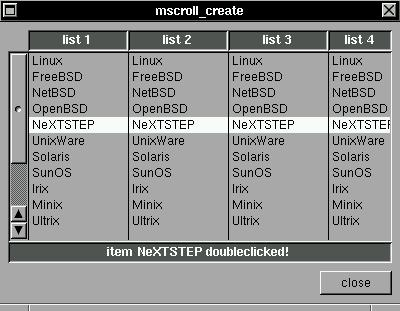

This is a enhanced version of the scrollable list, with support for multiple lists, automatic and resizable labels, enhanced mouse support (double-clicks :) and and optional menu actived by the right button of mouse. Of course, this widget is based in the scrollable list, but in future will be replaced by the scrollable list based in the x/y scroll widget.SYNTAX
struct xtree *mscroll_create(x,y,w,h,ptr,max,list,f,dclick,menu,cols);EXAMPLEint x,y,w,h,*ptr,*max,cols;
struct mlist *list;
void (*f)(struct xtree *);
void (*dclick)(struct xtree *);
void (*menu)(struct xtree *);This is the most complex widget inside XSTEP: 'mscroll_create' will create a multi-column-scrollable list, with support to a menu started by the right button of your mouse and support for doubleclicks. All functions are optional (all xstep widgets use null pointers to disable functions).
This example is really big! to make it clean, comments are inserted between all logic divisions:
#include <xstep.h>In this block is defined all variables. The important point is the biglist structure: this is a array of informations of a scrollable list (the label name, the list and the horitontal size).
char buffer[64],
*list[15]={
"Linux",
"FreeBSD",
"NetBSD",
"OpenBSD",
"NeXTSTEP",
"UnixWare",
"Solaris",
"SunOS",
"Irix",
"Minix",
"Ultrix",
"AIX",
"A/UX",
"System7",
"OpenVMS",
};
struct mlist biglist[]={
{ "list 1",list,100 },
{ "list 2",list,100 },
{ "list 3",list,100 },
{ "list 4",list,100 },
};
int listptr,listmax=15;void function(struct xtree *treeptr) {This is a function use to copy a item pointed by listptr to a buffer (like scrollable list).
strcpy(buffer,list[listptr]);
}This function will be actived if the user make a double-click over any scrollable list.void dclick(struct xtree *treeptr) { sprintf(buffer, "item %s doubleclicked!\n", list[listptr]); }This function is actived by the menu below.void menuf(struct xtree *treeptr) { switch(treeptr->l) { case 9: exit(0); break; default: sprintf(buffer, "item %d selected!\n", treeptr->l); break; } }This function is actived if you press the right button of mouse over the scrollable list. The normal procedure is open a popup menu (this is popup menu can be used with others widgets).void menu(struct xtree *treeptr) { char static *z[10]={ "Linux", "FreeBSD", "NetBSD", "OpenBSD", "NeXTSTEP", "UnixWare", "Solaris", "SunOS", "Irix", "Quit", }; menu_create(0,0,120,10*21,z,0,menuf); }And this is the main function: just create a mscroll widget :)void xmain(int n,char *p[]) { window_create(0,0,400,180,"mscroll_create"); mscroll_create( 8,8,-8,-(40+21), /* position and size */ &listptr, /* list pointer */ &listmax, /* list size */ biglist, /* list struct */ function, /* list pointer function */ dclick, /* doubleclick function */ menu, /* right button menu */ 4); /* lists inside list struct */ label_create(8,-40,-8,21,buffer,darkgray,center); button_create(-8,-8,72,24,"close",window_close); }